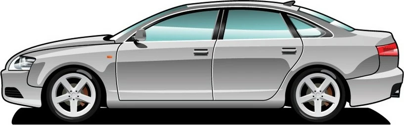

Седан — закритий кузов легкового автомобіля з багажником, структурно відокремленим від пасажирського салону (на ранніх автомобілях багажник зазвичай виглядав як чемодан-кофра, прикріплений до задньої стінки кузова або відсутній), без підйомних дверей у задній стінці, зазвичай з двома або трьома (наприклад, ЗІМ або «Чайка» ГАЗ-14) рядами повнорозмірних сидінь.
| Назва | BMW M5 | Mercedes CLS |
| об’єм двигуна | 5.0л, 635 к.с | 5.4л, 408 к.c |
| Розхід палива на 100км | 10.5 л | 17.0 л |
Сьогодні кузов седанів асоціюється переважно з триоб'ємними кузовами, але історично багато седанів були двооб'ємними; прикладами є практично всі седани до кінця 1930-х років і седани-фастбеки, зокрема ГАЗ-М-20 «Перемога». Заднє скло на седані практично завжди жорстко закріплене в отворі і не опускається/піднімається, хоча спинка заднього сидіння може бути або обладнана люком, або відкидатися (цілком або по секціях) для перевезення довгих предметів.